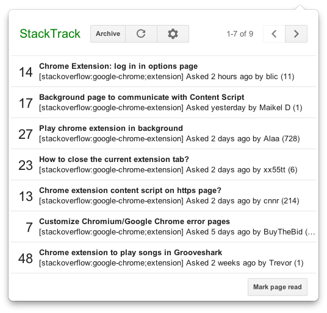

Stack Exchange question notifier
I've been a member of the Chrome developer relations team for the last 9 months, where one aspect of my job is developer support. I actively monitor the chromium-extensions@chromium.org list, answering questions about developing Chrome extensions. Thankfully, there are many others that help me in this endeavor, both from the Chrome team and from within the developer community itself, notably a certain PhistucK, the current record holder for the number of messages posted to the list.
Over the last years, another channel of questions has emerged: Stack Overflow (SO). SO is a great Q&A community for software developers, providing many advantages over ordinary discussion groups. Google has recognized this and sponsored SO tags, such as google-chrome, and google-chrome-extension. As I outlined in an mail to the group, we are now including SO as an official Chrome extension developer support channel.
As part of optimizing the support workflow, I wrote a Chrome extension which monitors questions with certain tags on SO and other Stack Exchange sites. This extension implements a browser action which gets badged with the number of unreviewed questions.
The extension UI uses the same visual style as other Google apps, and blends well into Chrome. I think it works reasonably well from a design perspective, both in the options page and in a browser action:

If you're curious to see how the extension is implemented, the source is available free of charge! This extension was implemented in Closure-style JavaScript.
If you support developers on Stack Overflow, please install it, give me constructive feedback and consider monitoring the google-chrome-extension tag :)